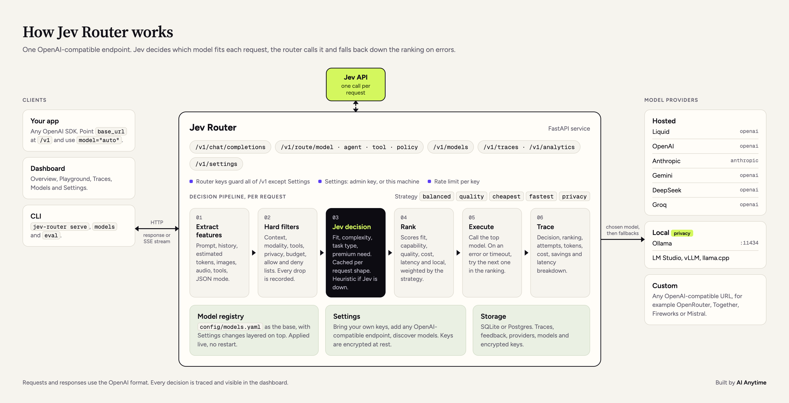
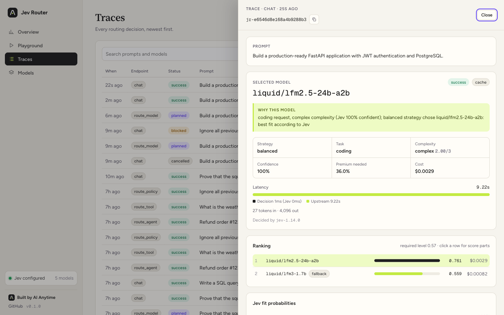

Four routers in one
Route to models, agents and tools, and screen requests with guardrails, all from the same engine.
Jev Router is one OpenAI-compatible endpoint for all your LLMs. Send model: "auto" and Jev picks the right-sized model for each request, then tells you why.
Self-hosted · MIT licensed · Your keys stay on your server
Illustrative routing. Try your own prompts in the built-in Playground.
Routes across the providers you already use
Drop-in
Point any OpenAI SDK at Jev Router and set the model to auto. Streaming, tools and JSON mode work as before. Every response says which model answered and why it was picked.
balanced, quality, cheapest, fastest or privacyX-Jev-Router-* headers, so it works for streams toofrom openai import OpenAI
client = OpenAI(
base_url="http://localhost:8000/v1",
api_key="your-router-key",
)
resp = client.chat.completions.create(
model="auto", # let Jev decide
messages=[{"role": "user", "content": "Refactor this to be async..."}],
)
print(resp.model)
# liquid/lfm2.5-24b-a2b
print(resp.model_extra["jev_router"]["routing_reason"])
# coding request, complex complexity; balanced strategy chose ...import OpenAI from "openai";
const client = new OpenAI({
baseURL: "http://localhost:8000/v1",
apiKey: "your-router-key",
});
const resp = await client.chat.completions.create({
model: "auto", // let Jev decide
messages: [{ role: "user", content: "Refactor this to be async..." }],
});
console.log(resp.model);
// liquid/lfm2.5-24b-a2bcurl http://localhost:8000/v1/chat/completions \
-H "Authorization: Bearer $ROUTER_KEY" \
-H "Content-Type: application/json" \
-H "x-jev-strategy: cheapest" \
-d '{
"model": "auto",
"messages": [{"role": "user", "content": "Summarise this email"}]
}'
# X-Jev-Router-Model: liquid/lfm3-1.7b
# X-Jev-Router-Strategy: cheapestHow it works
Most routers use keyword rules, embeddings or an extra LLM call that returns prose. Jev Router asks Jev a set of typed questions and gets back real probabilities it can rank models with.

Read the prompt, history, token count, images, audio, tools and JSON mode.
Drop every model that can't serve the request: context, modality, privacy, budget. Record why.
One Jev call with typed questions: which model fits, how hard is it, does it need a frontier model.
Score each model on fit, capability, quality, cost and latency, weighted by your strategy.
Call the top model. If it fails or times out, the next capable model takes over.
Store the decision, ranking, attempts, tokens, cost and latency for every request.
Features
Route to models, agents and tools, and screen requests with guardrails, all from the same engine.
balanced, quality, cheapest, fastest and privacy. Pick one per request with a header or body field.
If the chosen model errors or times out, the next-ranked capable model answers. Every attempt shows in the trace.
Block prompt injection, harmful content and PII before a request reaches any model, with a confidence score for each check.
If Jev is slow or down, a local heuristic router takes over and the trace says so.
Spend, savings, latency and model mix, plus a playground and a trace explorer for every decision.
Add provider keys and OpenAI-compatible servers in Settings. Keys are encrypted at rest and never sent to clients.
Connect Ollama, LM Studio or vLLM. The privacy strategy keeps requests on local models only.
Observability
Each request gets a trace: the model Jev picked, the ranking, the reason, every fallback attempt, tokens, cost and what it would have cost on your strongest model.

Results
The repo ships a 30-prompt routing eval: 15 light and 15 heavy prompts across chat, coding, math, analysis, extraction and writing. Here is a live run with the Liquid models and the balanced strategy.
| Metric | Jev Router | Heuristic router |
|---|---|---|
| Right-sized model (tier accuracy) | 100% | 53.3% |
| Task-type accuracy | 83.3% | 46.7% |
| Hard prompts sent to a weak model | 0 | 14 of 15 |
| Cost saved vs. always using the strongest model | 35.6% | 68.7%* |
| Decision latency p50 / p95 | 295 / 409 ms | <1 ms |
* The heuristic only looks cheaper because it sends 14 of the 15 hard prompts to a model that's too weak for them.
Quickstart
Python 3.11+ or Docker. You need a Jev API key and at least one provider key, or a local Ollama.
git clone https://github.com/AIAnytime/Jev-Router.git
cd Jev-Router
uv venv && uv pip install -e ".[dev]"cp .env.example .env
# JEV_API_KEY=...
# LIQUID_API_KEY=... any provider key worksjev-router serve
# API + dashboard on http://localhost:8000Let Jev make the call on every request, and see exactly why it chose.